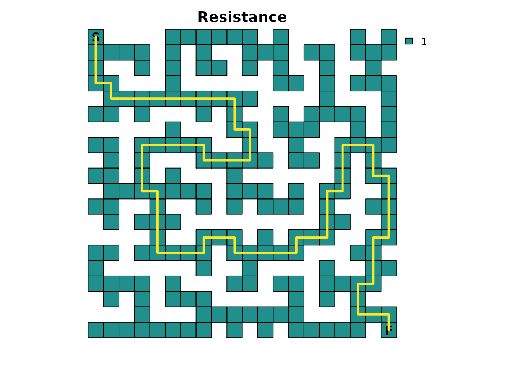
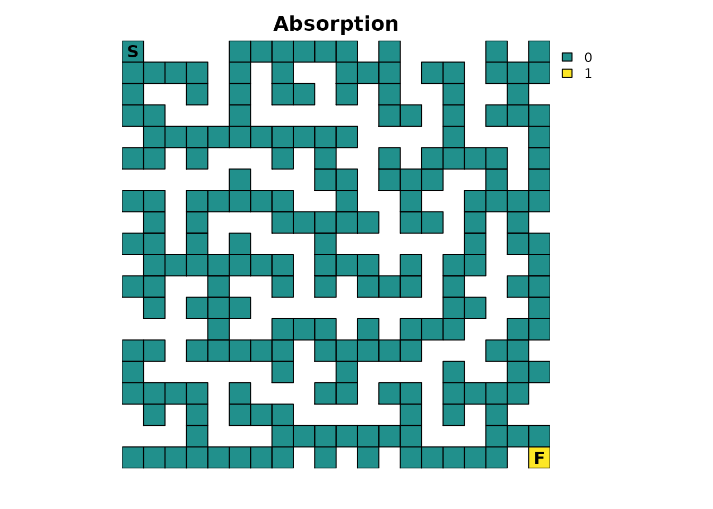
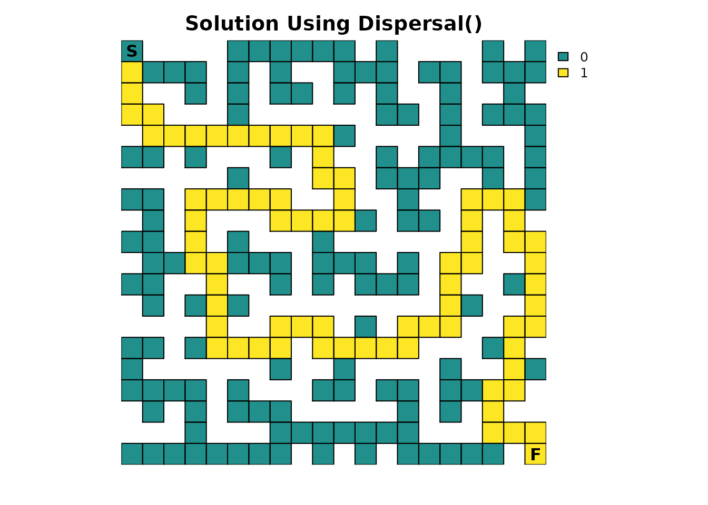
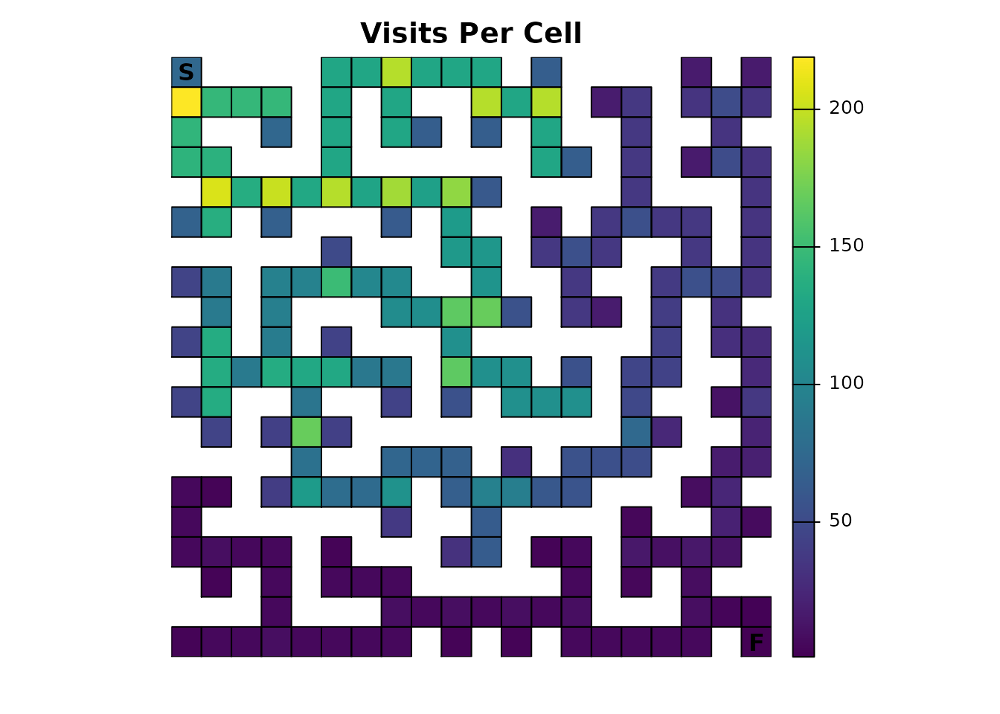
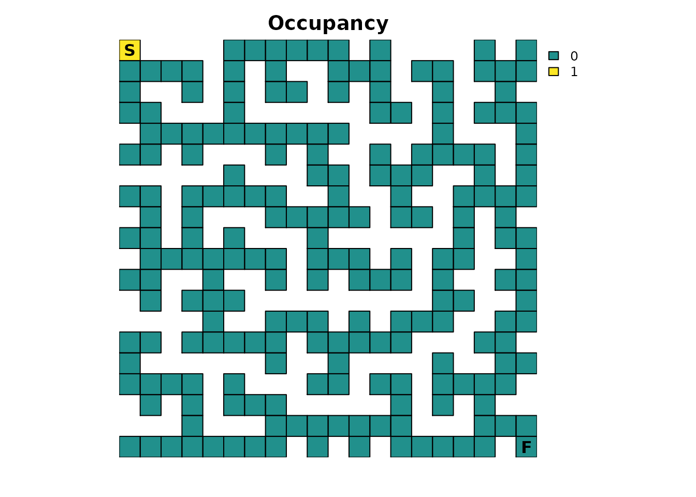
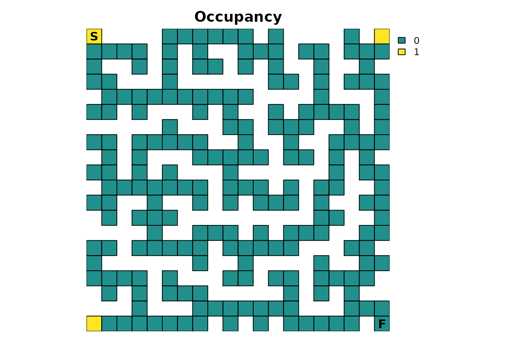
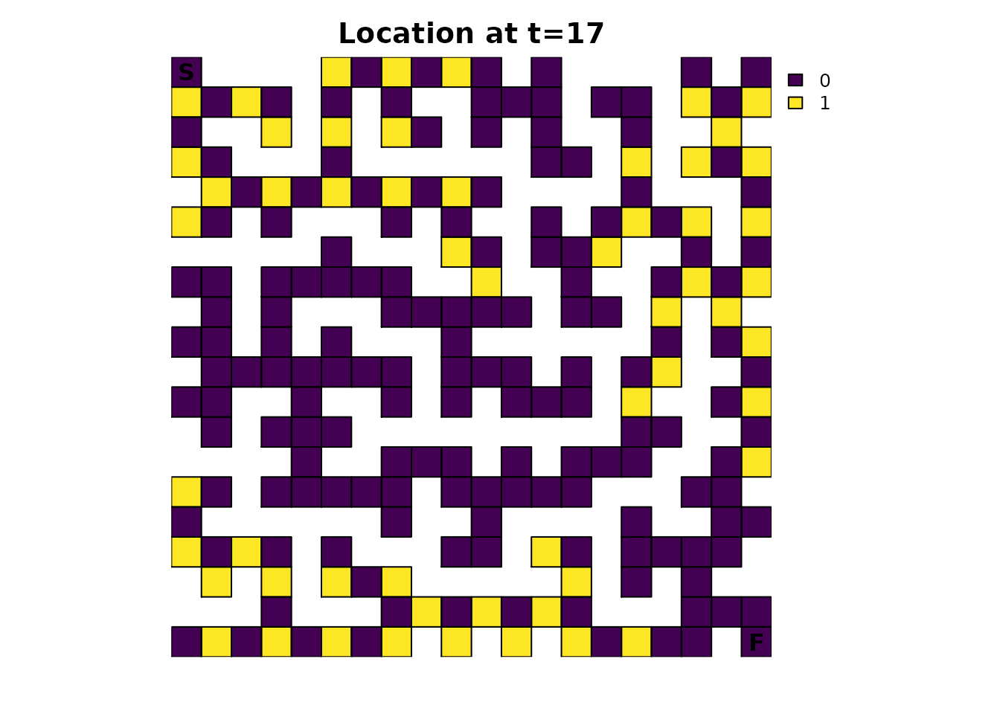

Introduction
This example shows how to use and interpret different absorbing Markov chain metrics with a perfect maze. A perfect maze is a maze that has no loops, every point is reachable, and there is only a single path between any two points. The motivation for this type of example is that is fun and interesting while having very simple properties that make it easy to visually and numerically interpret the results of the different metrics available in the package.
The complete code for this series is available on GitHub.
Setup
Create a function to reduce redundant plotting code and make the examples easier to read:
plot_maze <- function(map, title, colors) {
# start = 1 (top left), finish = last element (bottom right)
sf <- terra::xyFromCell(map, c(1, ncell(map)))
plot(map, main = title, col = colors, axes = FALSE, asp = 1)
plot(as.polygons(map, dissolve = FALSE), border = 'black', lwd = 1, add = TRUE)
points(sf, pch = c('S', 'F'), cex = 1, font = 2)
}Create a simple color palette for when only one or two colors are needed in a figure:
# A simple color palette with 2 colors
vir_col <- viridis(3)[2:3]Setup up a resistance map representing the maze and use the
gdistance package to get information about the solution
(the shortest path). Assume the start is the top left and the finish is
the bottom right:
maze_res <- samc::example_maze
maze_res <- samc::rasterize(maze_res)
maze_res[maze_res==0] <- NA # 0 makes the formatting cleaner above, but NA is needed for true barriers
# Get info about the shortest path through the maze using gdistance
lcd <- (function() {
points <- xyFromCell(maze_res, c(1, 400))
tr <- transition(raster(maze_res), function(x) 1/mean(x), 4)
tr <- geoCorrection(tr)
list(dist = gdistance::costDistance(tr, points),
path = shortestPath(tr, points[1, ], points[2, ], output="SpatialLines"))
})()
#> as(<dsCMatrix>, "dgTMatrix") is deprecated since Matrix 1.5-0; do as(as(., "generalMatrix"), "TsparseMatrix") instead
# Basic maze layout
plot_maze(maze_res, "Resistance", vir_col[1])
lines(lcd$path, col = vir_col[2], lw = 3)
Create an absorption map where the finish point is the only source of
absorption. It will have an absorption value of 1.0, which
means that once this point is entered, it cannot be left for another
cell in the maze:
# End of the maze
maze_finish <- maze_res * 0
maze_finish[20, 20] <- 1
plot_maze(maze_finish, "Absorption", vir_col)
Given the nature of some of the calculations performed by the
package, it’s sometimes possible for floating point precision issues to
arise where equality comparisons between two decimal values don’t yield
the expected results. It’s an unfortunate limitation of all computer
hardware and is why functions like all.equal() exist in
base R. Unfortunately, there isn’t a base function available for the
specific comparisons we want to perform, so we will manually have to do
it. To do so, we will need a tolerance value and will use the default
tolerance used by all.equal():
Create the samc object
With the resistance and absorption maps prepared, a samc object can be created:
rw_model <- list(fun = function(x) 1/mean(x), dir = 4, sym = TRUE)
maze_samc <- samc(maze_res, maze_finish, model = rw_model)
maze_origin <- locate(maze_samc, data.frame(x = 1, y = 20))
maze_dest <- locate(maze_samc, data.frame(x = 20, y = 1))The model represented by this samc object has been set up to assume a simple random walk. There is no “memory” of the past to stop the individual from going back to dead ends, there is no ability to “look ahead” and see dead ends, and the individual will always move to a different cell every time step.
Note the use of only four directions. This prevents diagonal movements in the maze, which in turn will have important consequences for short-term metrics (discussed later).
The start and finish locations are obtained from the samc object
using the locate() function. It’s important to remember
that the results from xyFromCell() (used above for the
RasterLayer object) do NOT work for samc objects. Although the
results from both functions may be equivalent in certain cases, they
generally will not be equivalent and cannot be used interchangeably.
Time to finish
We will start with determining how long, on average, it would be
expected for a single individual to finish the maze. Formally, the
survival() function calculates the expected time to
absorption, but since the maze has only one absorption point
representing the finish point, this means that, in this example,
survival() can be interpreted as the expected time to
finish the maze:
maze_surv <- survival(maze_samc)
plot_maze(map(maze_samc, maze_surv), "Expected time to finish", viridis(256))
The result is a vector with the expected time to absorption, or finish, for every point in the maze, not just the top left start point. The start location can be used to extract that information from the vector:
maze_surv[maze_origin]
#> [1] 13869When there is only a single point of total absorption, like in this
example, survival() and cond_passage() are
nearly identical when the destination for cond_passage() is
set to the point of absorption (the finish point):
maze_cond <- cond_passage(maze_samc, dest = maze_dest)
maze_cond[maze_origin]
#> [1] 13868It turns out that the cell in the map corresponding to our finish
point is not an absorbing state; it’s still a transient state.
Absorption occurs one time step later when the individual is removed
from the maze since it can’t go anywhere else in our example. So
cond_passage() reports how long it takes to reach the final
cell, and survival() tells us how long it takes us to reach
the final cell and then be removed from it.
A couple of things to keep in mind: - survival() will
have different results and a different interpretation for the maze in
more complicated scenarios with multiple points of absorption. -
cond_passage() normally does not work when there are states
that lead to total absorption. The only exception is when there is a
single instance of a state leading to total absorption present and the
dest parameter is set to it. In that case, the absorption
state is effectively ignored. This is why cond_passage()
works as shown in this example, but attempting to change the
dest parameter to a different location will cause it to
fail. cond_passage() can still be used for other
dest values, but first, the absorption value would have to
be changed to a value less than 1.
Probability of visiting a cell
If we’re interested in knowing the probability that a particular cell
(or cells) is visited at least once, then we can use the
dispersal() function:
maze_disp <- dispersal(maze_samc, origin = maze_origin)
#>
#> Cached diagonal not found.
#> Performing setup. This can take several minutes... Complete.
#> Calculating matrix inverse diagonal...
#>
Computing: 100% (done)
#>
Complete
#> Diagonal has been cached. Continuing with metric calculation...
plot_maze(map(maze_samc, maze_disp), "Probability of Visit", viridis(256))To complete the maze, the individual has to visit every cell along
the path to the exit, so all of those cells will have a probability of
1.0. The farther away from this path a cell is located, the
lower the probability it will be visited. Additionally, the closer the
individual gets to the finish, the less likely they will spend time
taking incorrect routes before stumbling upon the finish. There’s also
the possibility of scenarios like the one where the individual is near
the finish and then manages to stumble back to the start. These
different aspects contribute to more time spent near the start point, on
average, which in turn means that cells near the start have a higher
probability of being visited.
The previous paragraph hinted that the results from the
dispersal() function can be used to identify the route
through the maze:
# Ideally would use `as.numeric(maze_disp == 1)`, but floating point precision issues force an approximation
maze_disp_sol <- as.numeric(abs(maze_disp - 1) < tolerance)
plot_maze(map(maze_samc, maze_disp_sol), "Solution Using Dispersal()", vir_col)
Like the survival() function, there is an important
caveat: The visitation probabilities don’t include time 0.
So while it looks like the starting cell might have a probability of
1 in the first figure, it’s slightly less and it just
wasn’t apparent with the color scale:
maze_disp[maze_origin]
#> [1] 0.9864865Visits per cell
The package can be used to see how many times each cell in the maze
is expected to be visited on average. This is done using the
visitation() metric:
maze_visit <- visitation(maze_samc, origin = maze_origin)
plot_maze(map(maze_samc, maze_visit), "Visits Per Cell", viridis(256))
Since the finish point leads to total absorption, it will only be visited once:
maze_visit[maze_dest]
#> [1] 1Expected location
Using the distribution() function, the location of an
individual in the maze can be predicted for a given time:
maze_dist <- distribution(maze_samc, origin = maze_origin, time = 20)
plot_maze(map(maze_samc, maze_dist), "Location at t=20", col = viridis(256))There’s an odd pattern here that can be emphasized by incrementing the time from 20 to 21:
maze_dist <- distribution(maze_samc, origin = maze_origin, time = 21)
plot_maze(map(maze_samc, maze_dist), "Location at t=21", viridis(256))Earlier it was mentioned that using only 4 directions for the transition function would have consequences. Without either diagonal transitions or some form of fidelity (the possibility of an individual not moving), there will be an alternating pattern where a cell can and then cannot be occupied. It’s easiest to reason about the effect by running the same function for time steps 1-5 and visualizing it, an exercise that will be left to those interested.
Other metrics
There are a couple of metrics that have not been covered yet:
absorption() and mortality(). For the example
provide thus far, they don’t do anything useful.
mortality() would only report a 100% probability of
absorption at the finish point; it will be more useful when there are
multiple locations with absorption probabilities.
absorption() is only useful when there are different
types of absorption.
Occupancy
Many of the metrics offer a more advanced and flexible option for
setting an initial state in the absorbing Markov chain. Inputs to the
init parameter (short for initial state) can essentially be
used as an alternative to specifying a singular start point. Here is an
example init map that represents the scenario that has been
presented so far:
maze_init <- maze_res * 0
maze_init[1, 1] <- 1
plot_maze(maze_init, "Occupancy", vir_col)
Using the survival() metric, it produces the same result
as before:
survival(maze_samc, init = maze_init)
#> [1] 13869
maze_surv[maze_origin]
#> [1] 13869But now, more interesting scenarios can be tested. For example, let’s start the maze with 3 individuals:
# Scenario 1: 3 people start in the maze
maze_init3 <- maze_res * 0
maze_init3[1, 1] <- 3
survival(maze_samc, init = maze_init3)
#> [1] 41607The interpretation becomes a little trickier here. The
survival() metric is returning the cumulative time spent in
the maze for all the individuals. This means that with 3
individuals starting at the beginning, 3 times as much time is going to
be spent in the maze, but per individual, it will still take the same
number of time steps to finish as before:
survival(maze_samc, init = maze_init3) / 3
#> [1] 13869Here’s a different scenario with 3 individuals again, but now they start in different corners of the maze:
# Scenario 2: A person starts in each corner of the maze
maze_init3 <- maze_res * 0
maze_init3[1, 1] <- 1
maze_init3[20, 1] <- 1
maze_init3[1, 20] <- 1
plot_maze(maze_init3, "Occupancy", vir_col)
survival(maze_samc, init = maze_init3)
#> [1] 21949
Again, the cumulative time spent in the maze is larger than reported in the original scenario with one individual. However, this time the average time per individual spent in the maze decreases:
survival(maze_samc, init = maze_init3) / 3
#> [1] 7316.333This is because the additional individuals are now located in corners
that are substantially closer to the finish point, so they would be
expected to find it faster on average. Based on where each individual
starts, it would be reasonable to expect that the individual starting in
the bottom left has the biggest advantage. One way to try and visualize
this is with the distrbution() metric:
maze_init3_dist <- distribution(maze_samc, init = maze_init3, time = 17)
# This makes it easier to see how far along the individuals could be
maze_init3_dist <- as.numeric(maze_init3_dist > 0)
plot_maze(map(maze_samc, maze_init3_dist), "Location at t=17", viridis(256))
A good exercise for the reader is to apply the concepts of the animations vignette to this figure.
Future parts
In future parts, many different modifications will be made to the maze to explore how they change the results of different metrics and how the different metrics are related. These modifications include the use of fidelity to simulate scenarios where the individual pauses to think about their next decision, modifying the resistance input to simulate “looking ahead” to perform dead-end avoidance, and modifying the absorption input to simulate different sources of absorption such as lethal traps.